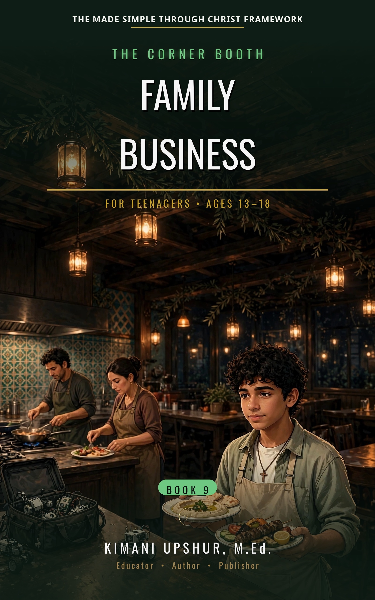

Home / Kids & Teens / Teenagers

Family Business
The Corner Booth, Book 9
by Kimani Upshur, M.Ed.
Omar Haddad can always see the thin places. At sixteen, he works the register and the dish pit at The Cedar House, his family's restaurant, and leads the systems work on a robotics team two weeks from the state final — and wherever either calendar runs thin that spring, he quietly writes in his own name: the Saturday closes his father declined to assign him, entered in a private planner nobody sees, every gap pre-paid out of his own pocket. Then the senior cook, who has worked that kitchen since before the Haddads' name was on the door, is called away by a family emergency on the eve of the fullest service of the season — a full book, a waitlist, a forty-person celebration in the side room — and Omar discovers that help has been flowing into the house for weeks that he never saw and never asked for: Grace Whitfield, working the dish pit twice a week, quietly, at the ordinary wage. Getting through that night means Omar has to say the hardest sentence in his vocabulary — 'I need help' — first at his own family's table, then to his five friends at the corner booth, and then stand at the pass, one station, all night, while other people carry real pieces of his family's work. Rooted in 1 Timothy 4:14 — do not neglect the gift you have — Family Business is a Christian young adult novel about work, family, and the difference between a gift and a wage: nobody keeps a place at a table by re-earning it every week. It is Book Nine of The Corner Booth series.
- Publisher
- Upshur Unlimited, LLC
- Author
- Kimani Upshur, M.Ed.
- Format
- Ebook
- List Price
- $4.99 USD
- Language
- English
- Audience
- For Teenagers • Ages 13–18
More Teenagers Books
Explore the full collection of books for teenagers.